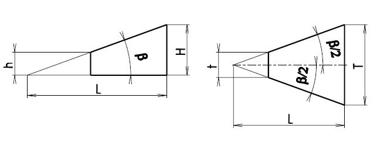

Normální sklony a jehlanovitosti

Řady sklonu ploch a úkosy jsou stanoveny normou ISO 2538:1974
Sklony ke všeobecnému použití
| 1. řada úhlu ß |
5° |
15° |
20° |
30° |
45° |
60° |
90° |
120° |
| Sklon S |
1:11,430052 |
1:3,732051 |
1:2,747477 |
1:1,732051 |
1:1 |
1:0,577350 |
- |
- |
| Jehlanovitost C |
1:11,451883 |
1:3,797877 |
1:2.835641 |
1:1,866025 |
1:1,207107 |
1:0,866025 |
1:0,5 |
1:0,288675 |
| 1. řada úhlu ß |
0°30'
| 1°
| 2°
| 3°
| 4°
| 6°
| 7°
| 8°
| 10°
| 40°
| 75°
|
| Sklon S |
1:114,588 |
1:57,289962 |
1:28,636253 |
1:19,081137 |
1:14,300666 |
1:9,514365 |
1:8,144346 |
1:7,115370 |
1:5,671282 |
1:1,191754 |
1:0,267492 |
| Jehlanovitost C |
1:114,590832 |
1:57,294325 |
1:28,644981 |
1:19,094230 |
1:14,318127 |
1:9,540568 |
1:8,174928 |
1:7,150335 |
1:5,715026 |
1:1,373739 |
1:0,651613 |
Další řada normalizovaných sklonu
| Sklon S |
1:500 |
1:200 |
1:100 |
1:50 |
1:20 |
1:10 |
| Úhel ß
| 0°6'52,5" |
0°17'11,3" |
0°34'22,6" |
1°8'44,7" |
2°51'44,7" |
5°42'38,1" |
Sklony ke zvláštním účelům
| Úhel ß |
Užití |
| 108° |
Úprava ploch pro V - svár |
| 50° |
Prismatické podložky a podpěry |